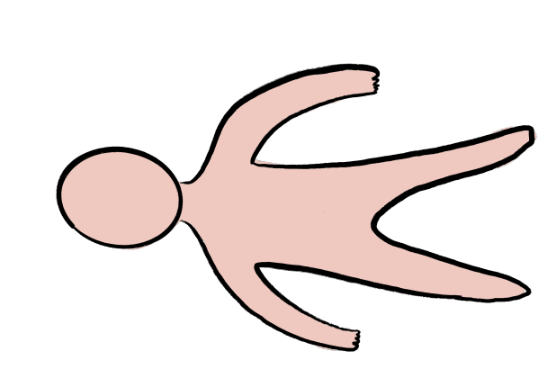
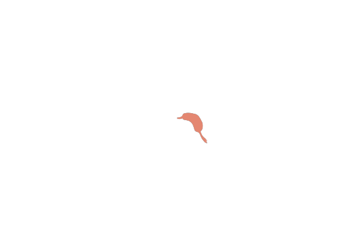
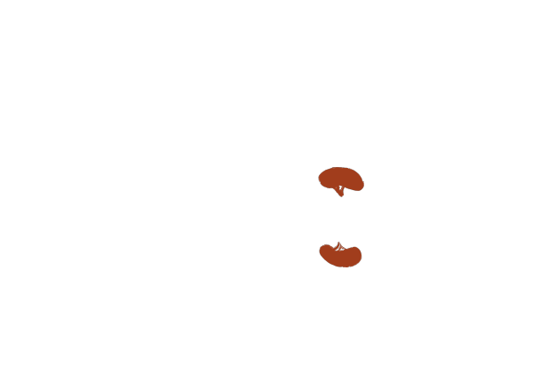
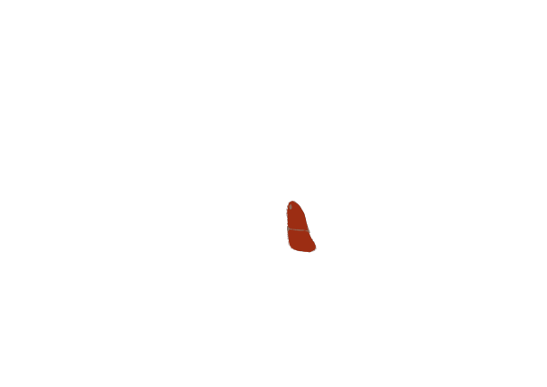
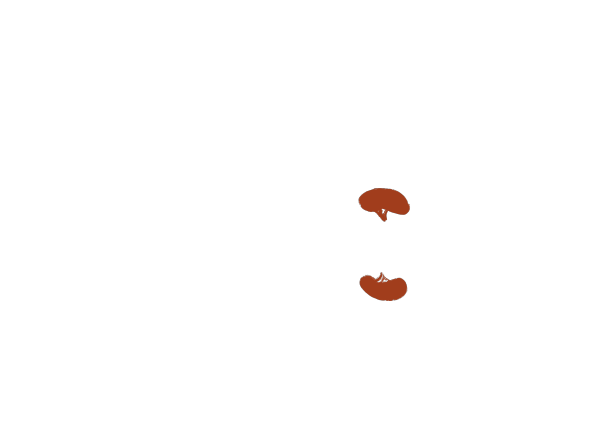
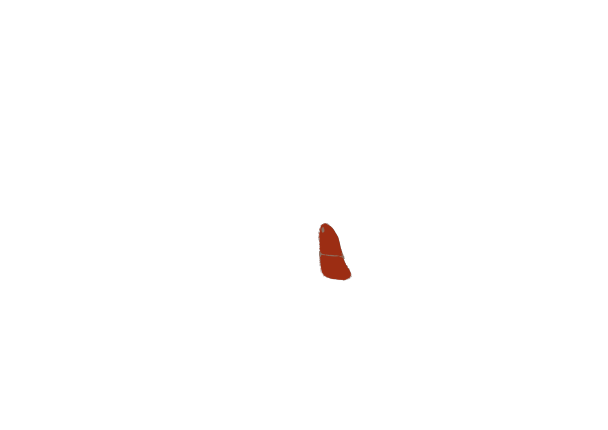

Le corps humain est complexe. Il contient de nombreuses bactéries et de cellules en plus d'organes qui ont chacun un fonctionnement propre. Le corps entier est alimenté par des fluides, tels que l'eau et le sang, effectuant un cycle. Ce mécanisme se retrouve dans tous les espèces vivants de la Terre et particulièrement celui de l'océan. L'océan est un ecosystème géant regroupant faune, flore, minéraux, fonge et bien d'autres. A la manière d'un très grand corps humain il possède des organes vitaux permettant le développement et le maintien de la vie.




 



Peau
Cœur
Poumons
Veines
Estomac
Cerveau
Intestins
Système immunitaire
Oreilles
Reins
Foie
Squelette
Yeux